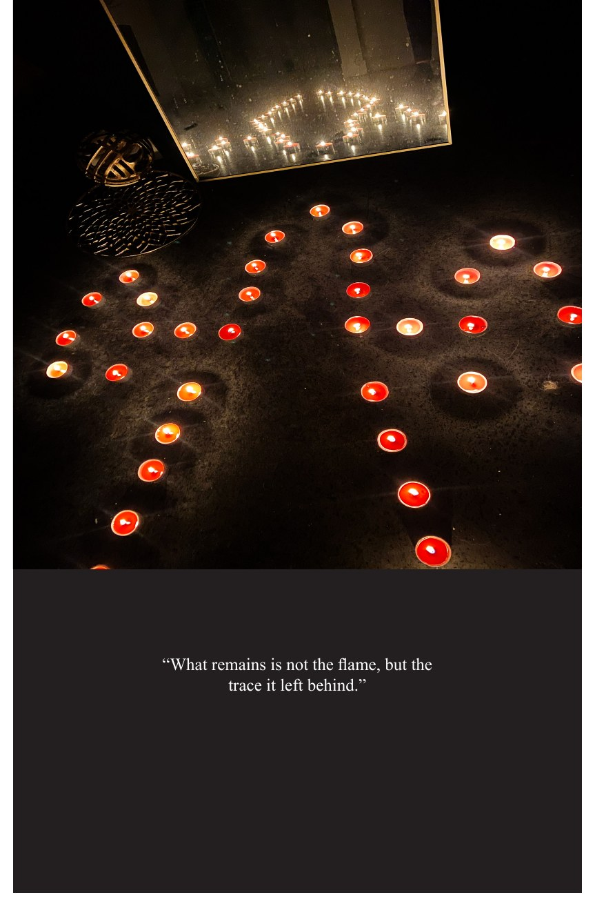
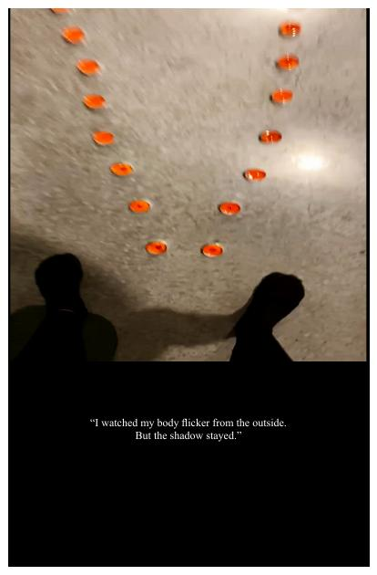

ARTIST BOOK / PERFORMANCE / PHOTOGRAPHY
Flicker Shadow
Disappearance
2025
Project Overview
Flicker_Shadow_Disappearance is an artist book based on a candle performance. The work uses light, shadow, mirrors, and a body-shaped candle arrangement to explore presence, memory, disappearance, and the trace left behind after something fades.
Medium Artist book, photography, performance documentation
Format 16-page booklet
Tools Adobe InDesign, photography, print layout
School Graphic Design | VCU
“The body holds its light until it learns how to disappear.”


Concept
The book moves from ignition to fading. Each page pairs a photographic moment with a short poetic caption, creating a quiet rhythm between image and text. The dark layout makes the candlelight feel more fragile and turns the body outline into both a physical form and a memory.